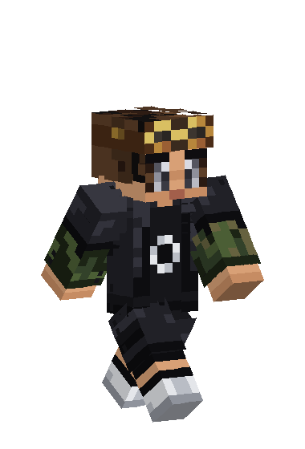
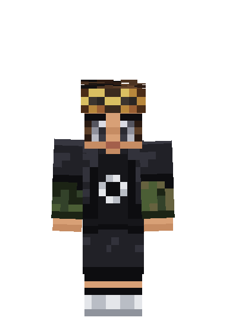

kubejs-modpack-scripts
Scripts KubeJS para um modpack de Minecraft 1.21.1 (NeoForge): geração de minérios com a Mesa Vibratória e o Crushing do Create, além de receitas do XyCraft. Feito com apoio de IA.
Ver no GitHub
Estudante de ADS na UDF, focado em automação com IA. Neste baú guardo o que estudo, o que construí e como falar comigo.
Estudante de Análise e Desenvolvimento de Sistemas na UDF. Aprendo a base da programação para guiar a IA e construir sites e automações.
Dica: use as teclas 1 a 6 para viajar entre as seções.

Estou focado em automação com Inteligência Artificial. Meu método é aprender bem a lógica, a estrutura do código e o banco de dados para saber pedir à IA o que ela precisa fazer. Depois eu reviso o que ela gera, testo e corrijo.
Uso Claude e Grok no dia a dia, e o Gemini só de vez em quando.
Os níveis mostram minha evolução. Não são uma medida oficial.
Scripts KubeJS para um modpack de Minecraft 1.21.1 (NeoForge): geração de minérios com a Mesa Vibratória e o Crushing do Create, além de receitas do XyCraft. Feito com apoio de IA.
Ver no GitHubEste site. Feito em HTML, CSS e JavaScript puros, sem bibliotecas, com apoio de IA e inspirado em Minecraft.
Ver no GitHubMais projetos a caminho. Banco de dados e linguagem C estão no plano.
Escolha um disco e aperte tocar. O som só começa quando você clicar.
Nenhum disco inserido.
As músicas tocam pelo player oficial do YouTube e pertencem aos seus artistas e canais. O player só carrega depois que você escolhe um disco.